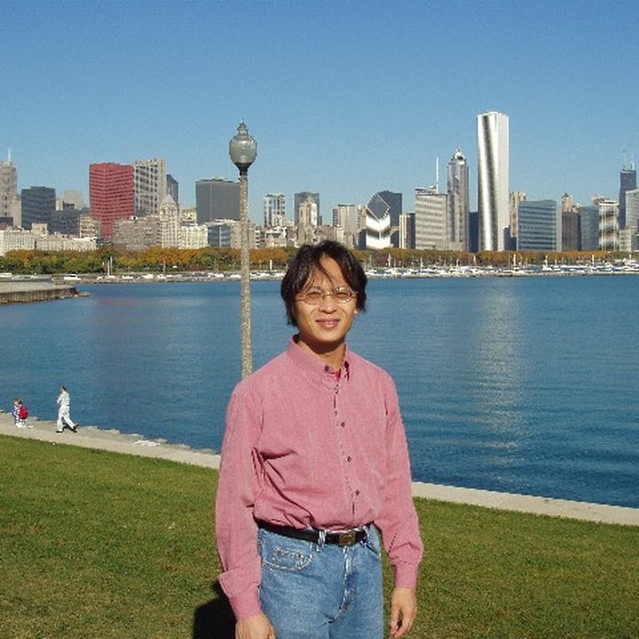

Large-Scale Multimodal Sports Data Analytics
Collection, management, integration, fusion, temporal modeling, data quality, domain adaptation, and scalable sports data pipelines.
2026 IEEE BigData Workshop
The Sixth International Workshop on Artificial Intelligence in Sports
A focused forum for large-scale sports data analytics, multimodal sensing, foundation models, edge AI, and trustworthy decision support across sports science and technology.
AI-Sports 2026 is proposed as a focused IEEE BigData workshop for research that treats sports intelligence as an end-to-end data problem. The workshop foregrounds the full lifecycle of sports data: acquisition from wearable, video, physiological, motion-capture, competition, and contextual sources; scalable data management; multimodal modeling; real-time inference; and accountable decision support for high-impact practice settings.
The workshop builds on five AI-Sports editions at IEEE ICME and complementary experience from IT4PSS at IJCAI. Its IEEE BigData positioning broadens the community beyond media analysis toward large-scale analytics, heterogeneous sensor integration, reproducible benchmarks, edge-cloud systems, foundation models, trustworthy AI, and deployment-ready sports science applications.
Large video, sensor, and event archives
Real-time athlete monitoring and inference
Video, IMU, EMG, PPG, GPS, RFID, logs, and context
Noisy, missing, drifting, and domain-shifted signals
Actionable guidance for coaches, athletes, and clinicians
We invite research papers, position papers, benchmark papers, dataset papers, and system demonstrations. Submissions should emphasize data scale, multimodal integration, methodological novelty, reproducible evaluation, and practical relevance to sports science and sports technology.
Work addressing large-scale analytics, AI-driven data intelligence, IoT and edge data processing, trustworthy modeling, and deployable decision-support systems for real-world sports environments is especially welcome.
The scope connects sports applications with IEEE BigData themes in analytics, systems, AI, reproducibility, and real-world deployment.
Focus Area A
Collection, management, integration, fusion, temporal modeling, data quality, domain adaptation, and scalable sports data pipelines.
Collection, management, integration, fusion, temporal modeling, data quality, domain adaptation, and scalable sports data pipelines.
Detection, tracking, pose estimation, action recognition, event detection, tactical analysis, motion forecasting, and long-horizon modeling.
Vision-language models, sports-aware foundation models, retrieval-augmented coaching, report generation, and human-in-the-loop workflows.
Wearable streams, edge-cloud coordination, latency-aware analytics, secure data transmission, and deployment constraints.
Calibration, robustness, privacy-preserving learning, fairness, transparent reporting, explainability, audit trails, and reproducible benchmarks.
Athlete, team, and environment digital twins; physics-aware learning; synthetic data; motion reconstruction; and what-if analysis.
Performance analysis, training planning, rehabilitation assessment, return-to-play support, AR/VR feedback, and adaptive dashboards.
Feature attribution, visual explanations, counterfactual coaching guidance, interpretable multimodal fusion, and user-centered explanation interfaces.
IEEE BigData 2026 will take place Dec. 14-17, 2026 at Sheraton Phoenix Downtown in Phoenix, Arizona, USA. The exact workshop date will be announced after final IEEE BigData scheduling.
The program combines invited keynotes, oral papers, poster and demo exchange, and a cross-venue panel with academic and industrial perspectives.
All workshop papers must be submitted through the official submission system provided by the conference. Submissions sent directly to the workshop organizers will not be considered.
The team brings together AI-Sports, multimedia, sensing, machine learning, IoT, and sports science experience across Taiwan, the United States, Japan, and Germany.
National Central University, Taiwan
shih@ncu.edu.tw Homepage
National Yang Ming Chiao Tung University, Taiwan
tik@nycu.edu.tw HomepageNational Central University, Taiwan
msun@csie.ncu.edu.tw HomepageAuburn University, USA
weishinn@auburn.edu HomepageTokyo Metropolitan University, Japan
ksakai@tmu.ac.jp HomepageHokkaido University, Japan
ogawa@lmd.ist.hokudai.ac.jp HomepageUniversity of Washington, USA
hwang@uw.edu HomepageUniversity of Augsburg, Germany
rainer.lienhart@uni-a.de HomepageHuang-Chia Shih works on multimedia content analysis, human-computer interaction, pattern recognition, medical image processing, and sports big data analytics. He is the lead workshop organizer.
Tsì-Uí İk focuses on intelligent sports learning, intelligent transportation systems, mobile sensing, machine learning, deep learning, and wireless sensor networks.
Min-Te Sun researches deep learning, network security, and distributed computing, and serves as chair of CSIE at National Central University.
Wei-Shinn Ku leads work in data management systems, data science, cybersecurity, and mobile computing as an endowed professor at Auburn University.
Takahiro Ogawa researches AI, IoT, and big data analysis for multimedia signal processing and applications.
Jenq-Neng Hwang is a fellow of IEEE and a long-standing contributor to multimedia signal processing, computer vision, AI, and industry-connected machine learning.
Rainer Lienhart leads the Machine Learning and Computer Vision Lab at the University of Augsburg, with expertise in large-scale video, human pose, sensor, and data mining algorithms.
AI-Sports 2026 extends existing sports AI, computer vision, multimedia, and precision sports science communities toward large-scale, heterogeneous, real-time, and trustworthy sports data intelligence.
The AI-Sports workshop series ran across five ICME editions, forming a community around sports analysis, multimedia understanding, sensing technologies, and intelligent sports applications.
IT4PSS cultivated an IJCAI-side audience for intelligent technologies in precision sports science and complements AI-Sports' broader history.
CVsports and MMSports show sustained interest in sports vision and multimodal sports content. The IEEE BigData workshop complements them through systems, scalable analytics, IoT, reproducibility, and data-driven deployment.